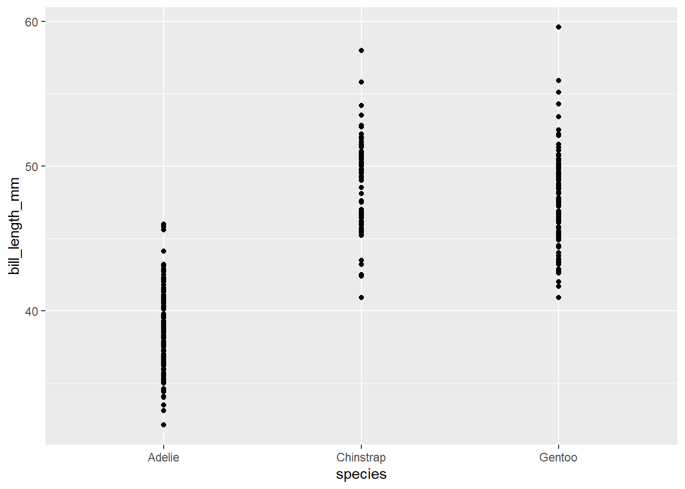
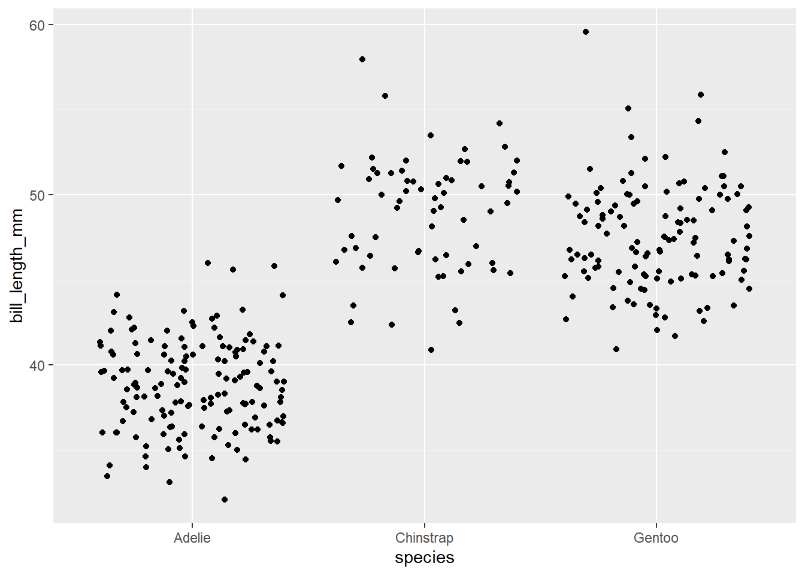
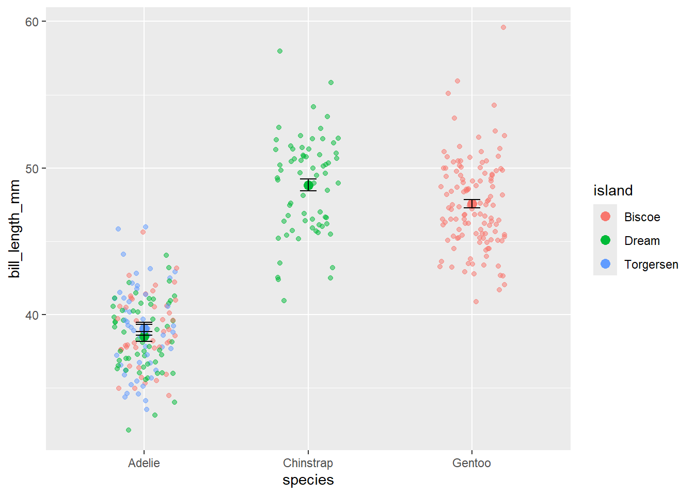
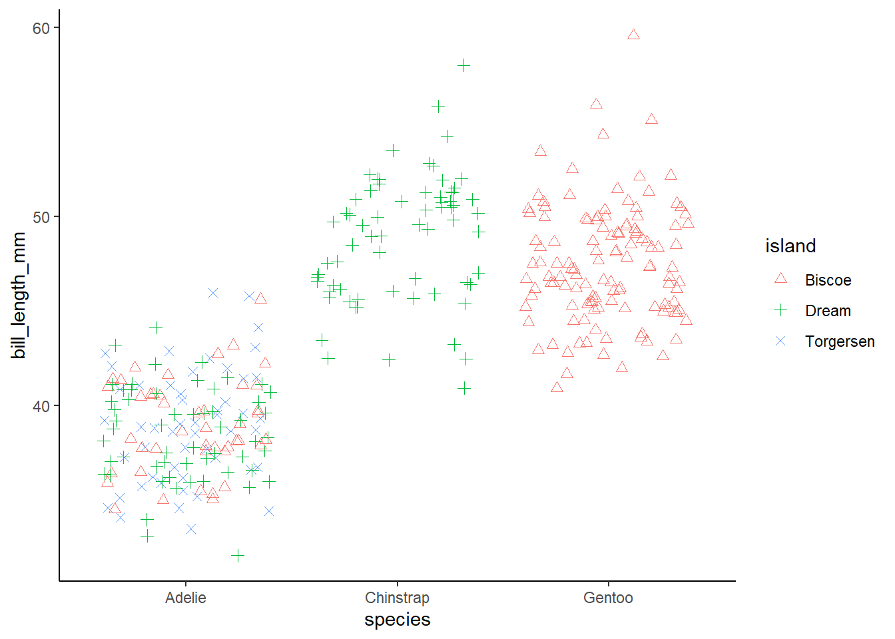

#Load packages
library(tidyverse)
library(ggsci) #for easy color scales
library(patchwork) #to make multi-panel plots
library(palmerpenguins) # our fave penguin friends :)Lab 2: Intro to graphing in ggplot
Tutorials and Resources for graphs in ggplot
1.) Load packages we need
Making nice looking graphs is a key feature of R and of data science in general. The best way to do this in R is through use of the ggplot2 package. This package is the most user friendly and flexible way to make nice plots in R. Notably, ggplot2 is a package that is contained within the tidyverse package, which is more of a style of R usage than a package. So, let’s load tidyverse and a few other useful packages for today.
2.) What makes a good graph vs a bad graph?
Take a look at some graphs of data for your field of interest. You may have a look at papers you have recently read or graphs you find in textbooks or assignments. Consider what you like or don’t like about these graphs. What looks good and/or makes a graph easy to interpret? What doesn’t? Making figures is both an art and a science.
To learn more about what makes graphs good (or bad), read Chapter 1 of Kieran Healy’s online data visualization book –> What makes figures bad?
To continue your learning, have a look at this more detailed data visualization book by Claus Wilke Fundamentals of Data Visualization
3.) ggplot basics
ggplot2 is the preferred graphics package for most R users. It allows users to build a graph piece by piece from your own data through mapping of aesthetics. It is much easier to make pretty (publication and presentation quality) plots with ggplot2 than it is with the base plot function in R. If you prefer base plot() that is ok. You can use whatever you’d like but when we talk about graphs we will be using the language of ggplot.
Attached here are the Tidyverse Cheat Sheets for ggplot2

The ggplot() function is the base of the ggplot2 package. Using it creates the space that we use to build a graph. If we run just the ggplot() function we will get a gray rectangle. This is the space (and background) of our plot!
ggplot()
To build a plot on the background, we must add to the ggplot call. First, we need to tell it what data to use. Next, we need to tell it where in the data frame to pull data from to build the axes and data points. The part of the ggplot() function we use to build a graph is called aes() or aesthetics.
Here is an example using penguins: I am telling ggplot that the data we are using is ‘penguins’ and then defining the x and y axis in the aes() call with column names from penguins
head(penguins)# A tibble: 6 × 8
species island bill_length_mm bill_depth_mm flipper_length_mm body_mass_g
<fct> <fct> <dbl> <dbl> <int> <int>
1 Adelie Torgersen 39.1 18.7 181 3750
2 Adelie Torgersen 39.5 17.4 186 3800
3 Adelie Torgersen 40.3 18 195 3250
4 Adelie Torgersen NA NA NA NA
5 Adelie Torgersen 36.7 19.3 193 3450
6 Adelie Torgersen 39.3 20.6 190 3650
# ℹ 2 more variables: sex <fct>, year <int>ggplot(data=penguins, aes(x=species, y= bill_length_mm)) 
Like anything in R, we can give our plot a name and call it later
plot1<-ggplot(data=penguins, aes(x=species, y= bill_length_mm))
plot1
This is incredibly useful in ggplot as we can essentially add pieces to make a more complete graph
plot1+
geom_boxplot()+
geom_point()+
theme_bw()Warning: Removed 2 rows containing non-finite outside the scale range
(`stat_boxplot()`).Warning: Removed 2 rows containing missing values or values outside the scale range
(`geom_point()`).
Before we get too excited about making perfect graphs, let’s take a look at the types of graphs we have available to us…
Histograms are used to explore the frequency distribution of a single variable. We can check for normality (a bell curve) using this feature. We can also look for means, skewed data, and other trends.
ggplot(data=penguins, aes(bill_length_mm))+
geom_histogram()`stat_bin()` using `bins = 30`. Pick better value with `binwidth`.Warning: Removed 2 rows containing non-finite outside the scale range
(`stat_bin()`).
Within geom_histogram we can use bin_width to change the width of our x-axis groupings.
ggplot(data=penguins, aes(bill_length_mm))+
geom_histogram(binwidth=5)Warning: Removed 2 rows containing non-finite outside the scale range
(`stat_bin()`).
A boxplot is a really useful plot to assess median and range of data. It can also identify outliers! The defaults for a boxplot in ggplot produce a median and interquartile range (IQR). The 1st quartile is the bottom of the box and the 3rd quartile is the top. The whiskers show the spread of the data where the ends of the whiskers represent the data points that are the furthest from the median in either direction. Notably, if a data point is 1.5 * IQR from the box (either the 1st or 3rd quartile) it is an outlier. Outliers are excluded from whiskers and are presented as points. There
Here’s an example
ggplot(data=penguins, aes(x=species, y= bill_length_mm)) +
geom_boxplot()Warning: Removed 2 rows containing non-finite outside the scale range
(`stat_boxplot()`).
We can use geom_violin to combine boxplot with a density plot (similar to a histogram) Here we can see the distribution of values within bill length by species.
ggplot(data=penguins, aes(x=species, y= bill_length_mm)) +
#geom_boxplot()+
geom_violin()Warning: Removed 2 rows containing non-finite outside the scale range
(`stat_ydensity()`).
We can make bar graphs in ggplot using geom_bar(). There are some tricks to getting bar graphs to work exactly right, which I will try to detail below. NOTE Bar graphs are very rarely useful. If we want to show means, why not just use points + error bars? What does the bar actually represent? There aren’t that many cases where we really need bar graphs. There are exceptions, like when we have a population and we want to see the demographics of that population by count or percentage (see example below)
Here is a simple bar chart.
ggplot(data=penguins, aes(species)) +
geom_bar()
Here is a more elaborate boxplot that shows species breakdown by island! Note that we use an aes() call within geom_bar to define a fill. That means fill by species, or add a color for each species.
ggplot(data=penguins, aes(island)) +
geom_bar(aes(fill=species))
And here is that same plot with the bars unstacked. Instead of stacking, we have used “dodged” each color to be its own bar.
ggplot(data=penguins, aes(island)) +
geom_bar(aes(fill=species), position= position_dodge())We learned when the best (only) times to use bar graphs are. Do you remember what those were? Are the examples above representative of that?
A line graph can be extremely useful, especially if we are looking at time series data or rates!
Here is an example of CO2 uptake vs concentration in plants. Each color represents a different plant. NOTE: the dataset called ‘CO2’ is built into R, so we can just use it without loading anything :)
head(CO2) Plant Type Treatment conc uptake
1 Qn1 Quebec nonchilled 95 16.0
2 Qn1 Quebec nonchilled 175 30.4
3 Qn1 Quebec nonchilled 250 34.8
4 Qn1 Quebec nonchilled 350 37.2
5 Qn1 Quebec nonchilled 500 35.3
6 Qn1 Quebec nonchilled 675 39.2ggplot(data=CO2, aes(x=conc, y= uptake, color=Plant)) +
geom_line()We can change the aesthetics of the lines using color, linetype, size, etc. Here I am changing the linetype based on the plant species and increasing the size of ALL lines to 2. This is a good example of how aes() works. Anything within the aes() call is conditional. That means, I give it a name (such as a column or variable name) and it changes based on that column or variable. To change an aesthetic across all lines, points, etc, I just put the code outside of the aes(). As I did for size. That makes the size of ALL lines = 2.
ggplot(data=CO2, aes(x=conc, y= uptake, color=Plant)) +
geom_line(aes(linetype=Plant),size=2)Warning: Using `size` aesthetic for lines was deprecated in ggplot2 3.4.0.
ℹ Please use `linewidth` instead.The scatter plot is probably the most commonly used graphical tool in ggplot. It is based on the geom_point() function
ggplot(data=penguins, aes(x=species, y= bill_length_mm)) +
geom_point()Warning: Removed 2 rows containing missing values or values outside the scale range
(`geom_point()`).
Importantly, we can use the data= and aes() calls within geom_point() or any other geom instead of within ggplot() if needed. Why might this be important?
ggplot() +
geom_point(data=penguins, aes(x=species, y= bill_length_mm))Warning: Removed 2 rows containing missing values or values outside the scale range
(`geom_point()`).
Sometimes we don’t want to plot all of our points on the same vertical line. If that is the case, we can use geom_jitter()
ggplot(data=penguins, aes(x=species, y= bill_length_mm)) +
geom_jitter()Warning: Removed 2 rows containing missing values or values outside the scale range
(`geom_point()`).
We often want to present means and error in our visualizations. This can be done through the use of geom_boxplot() or through combining geom_point() with geom_errorbar()
Here is an example of the later…
#First, we need to calculate a mean bill length for our penguins by species and island
sumpens<- penguins %>%
group_by(species, island) %>%
na.omit() %>% #removes rows with NA values (a few rows may otherwise have NA due to sampling error in the field)
summarize(meanbill=mean(bill_length_mm), sd=sd(bill_length_mm), n=n(), se=sd/sqrt(n))
sumpens# A tibble: 5 × 6
# Groups: species [3]
species island meanbill sd n se
<fct> <fct> <dbl> <dbl> <int> <dbl>
1 Adelie Biscoe 39.0 2.48 44 0.374
2 Adelie Dream 38.5 2.48 55 0.335
3 Adelie Torgersen 39.0 3.03 47 0.442
4 Chinstrap Dream 48.8 3.34 68 0.405
5 Gentoo Biscoe 47.6 3.11 119 0.285# Now we can plot!
ggplot(data=sumpens, aes(x=species, y=meanbill, color=island))+
geom_point()+
geom_errorbar(data=sumpens, aes(x=species, ymin=meanbill-se, ymax=meanbill+se), width=0.2)And if we want to be extra fancy (and rigorous), we can plot the raw data behind the mean+error This is considered a graphical best practice as we can see the mean, error, and the true spread of the data!
ggplot()+
geom_jitter(data= penguins, aes(x=species, y=bill_length_mm, color=island), alpha=0.5, width=0.2)+ #this is the raw data
geom_point(data=sumpens, aes(x=species, y=meanbill, color=island), size=3)+ #this is the averages
geom_errorbar(data=sumpens, aes(x=species, ymin=meanbill-se, ymax=meanbill+se), width=0.1)Warning: Removed 2 rows containing missing values or values outside the scale range
(`geom_point()`).
An alternative to geom_jitter, which doesn’t always work, is to use geom_point but force the points to not overlap with position_dodge. Here is an example
#first we should define the distance of our position_dodge
pd<-position_dodge(width=0.2)
ggplot(data=sumpens, aes(x=species, y=meanbill, color=island))+
geom_point(data= penguins, aes(x=species, y=bill_length_mm, color=island), alpha=0.2, width=0.2, position=pd)+ #raw data
geom_point(size=3, position=pd)+ #averages
geom_errorbar(aes(ymin=meanbill-se, ymax=meanbill+se), width=0.2, position=pd)Warning in geom_point(data = penguins, aes(x = species, y = bill_length_mm, :
Ignoring unknown parameters: `width`Warning: Removed 2 rows containing missing values or values outside the scale range
(`geom_point()`).This code will produce the same graph as above. Note that in geom_jitter we just replaced width = with position =
ggplot(sumpens, aes(x=species, y= meanbill, color=island))+
geom_jitter(data= penguins, aes(x=species, y=bill_length_mm, color=island), alpha=0.5, position=pd)+ #this is the raw data
geom_point(size=3,position=pd)+ #this is the averages
geom_errorbar(aes(ymin=meanbill-se, ymax=meanbill+se), width=0.2, position=pd)Warning: Removed 2 rows containing missing values or values outside the scale range
(`geom_point()`).4.) Intermediate Aesthetics
Titles and axis labels are easy to add and change in ggplot! We simply add another line to our code. NOTE you can also add a subtitle, caption, or change the legend title using labs!
ggplot(data=penguins, aes(x=species, y= bill_length_mm)) +
geom_boxplot(aes(fill=species))+
scale_fill_aaas()+
theme_classic()+
labs(x = 'Species', y='Bill length (mm)', title='Penguin bill length by species', fill='Species')+ #here I change the x-axis and y-axis labels, add a title, and change the legend label (to capitalize the 'S' in 'species')
theme(text=element_text(size=18))Warning: Removed 2 rows containing non-finite outside the scale range
(`stat_boxplot()`).We can change colors conditionally or manually.
Conditional Color Change To change colors conditionally, we use color= or fill= within an aes() call.
Here I have changed the outline color (color=) for a series of boxplots based on species
ggplot(data=penguins, aes(x=species, y= bill_length_mm, color=species)) +
geom_boxplot()Warning: Removed 2 rows containing non-finite outside the scale range
(`stat_boxplot()`).I can also change the fill of the boxplots
ggplot(data=penguins, aes(x=species, y= bill_length_mm, fill=species)) +
geom_boxplot()Warning: Removed 2 rows containing non-finite outside the scale range
(`stat_boxplot()`).Manual Color Change We can also change colors manually by using one of many options within ggplot. scale_color_manual (or scale_fill_manual) is the easiest. We simply define colors we want to use by name or hexcode.
ggplot(data=penguins, aes(x=species, y= bill_length_mm)) +
geom_boxplot(aes(fill=species))+
scale_fill_manual(values=c('red', 'black', 'blue'))Warning: Removed 2 rows containing non-finite outside the scale range
(`stat_boxplot()`).Here’s a giant table of color options in ggplot You can also make your own color palette and apply that to your figure!
mypal<-c('dodgerblue', 'forestgreen', 'coral') # here I've made a 3 color palette
ggplot(data=penguins, aes(x=species, y= bill_length_mm)) +
geom_boxplot(aes(fill=species))+
scale_fill_manual(values=mypal)Warning: Removed 2 rows containing non-finite outside the scale range
(`stat_boxplot()`).You can use the package RColorBrewer to make palettes as well. I’ll let you explore that one on your own!
Finally, EASY and nice looking palettes with ggsci ggsci is a simple and neat package that allows us to use scientific journal color themes for our data (usually colorblind friendly and nice looking). we simply change our “scale_color_manual” to “scale_color_palname” where “palname” is one of many provided by ggsci. For example, we might use scale_color_aaas()
ggplot(data=penguins, aes(x=species, y= bill_length_mm)) +
geom_boxplot(aes(fill=species))+
scale_fill_aaas()Warning: Removed 2 rows containing non-finite outside the scale range
(`stat_boxplot()`).ggplot gives us options to change point shape using the aesthetic option ‘shape’
We can either change shape based on a characteristic of the data (‘cyl’, for example), make all the shapes the same, or manually control shape
Below is a table of shape options:

Conditional Shape Change
ggplot(data=penguins, aes(x=species, y=bill_length_mm, color=island, shape=island))+
geom_jitter(size=2)+
theme_classic()Warning: Removed 2 rows containing missing values or values outside the scale range
(`geom_point()`).Change all shapes to triangles
ggplot(data=mtcars, aes(x=cyl, y=mpg, color=cyl))+
geom_point(shape=17) #Here 'shape=' is inside the settings for geom_point. Note that it is outside the aes() function, as that applied aesthetics conditionally)
#example 2, same w/ different syntax
ggplot()+
geom_point(data=mtcars, aes(x=cyl, y=mpg, color=cyl), shape=17)Manual shape changes
ggplot(data=penguins, aes(x=species, y=bill_length_mm, color=island, shape=island))+
geom_jitter(size=2)+
theme_classic()+
scale_shape_manual(values=c(2,3,4)) #scale_shape_manual allows us to choose shapes for each group (cyl in this case). c stands for concatenate, as we've seen beforeWarning: Removed 2 rows containing missing values or values outside the scale range
(`geom_point()`).
Changing Size of points
Conditional Shape Change
ggplot(data=mtcars, aes(x=cyl, y=mpg, color=cyl, size=cyl))+ #note that we added 'size=' to our aes.
geom_point()#note the warning message that using size for a discrete variable is not best practice.
#Instead, let's use the size to five us an idea of hp (a 3rd variable)
ggplot(data=mtcars, aes(x=cyl, y=mpg, color=cyl, size=hp))+ #note that we added 'size=' to our aes.
geom_point()Change size of all points (all points must be same size)
ggplot(data=mtcars, aes(x=cyl, y=mpg, color=cyl))+
geom_point(size=5) #as w/ shape, point needs to be outside the aes() here. Often in science we are interested in comparing several graphs at once or looking at 3 or 4 variables at a time. This means we may want to have multi-panel graphs or multiple graphs on the same page. While it is common to produce graphs in R and combine them into “final” manuscript ready version in other programs, such as Adobe Illustrator or Inkscape (a free alternative to Illustrator), producing manuscript quality figures in R is possible! In fact, it is only getting easier, thanks to some new packages (like patchwork). Below I will show you how to make multipanel figures (aka facets) and how to put many figures on one page (using the patchwork package– the easiest of the many options for doing this).
Facets allow us to produce multiple graph panels with one ggplot code. We can separate out a variable for easier viewing or even create a grid of graphs using multiple variables.
facet_wrap() allows us to make multiple panels. The panels are aligned in columns and rows. We need to use ‘~’ in our facet_wrap code. The ‘~’ essentially means “by”
ggplot(data=penguins, aes(x=island, y= bill_length_mm, fill=species)) +
geom_boxplot()+
facet_wrap(~island)+
scale_color_aaas()+
theme_classic()Warning: Removed 2 rows containing non-finite outside the scale range
(`stat_boxplot()`).
We can specify the number of columns and rows we want to built the panels how we like them
ggplot(data=penguins, aes(x=year, y= bill_length_mm, fill=species)) +
geom_boxplot()+
facet_wrap(~island, ncol=2)+ #2 columns
scale_color_aaas()+
theme_classic()Warning: Removed 2 rows containing non-finite outside the scale range
(`stat_boxplot()`).ggplot(data=penguins, aes(x=year, y= bill_length_mm, fill=species)) +
geom_boxplot()+
facet_wrap(~island, nrow=3)+ #3 rows
scale_color_aaas()+
theme_classic()Warning: Removed 2 rows containing non-finite outside the scale range
(`stat_boxplot()`).We can even use a formula for building our facets if we’d like!
ggplot(data=penguins, aes(x=island, y= bill_length_mm, fill=species)) +
geom_boxplot()+
facet_wrap(~species+year)+
scale_color_aaas()+
theme_classic()Warning: Removed 2 rows containing non-finite outside the scale range
(`stat_boxplot()`).Using the simple and wonderful patchwork package, we can place multiple plots on the same page. To do this, we must actually name each plot. Here’s an example.
Patchwork is super easy! Learn more here(with examples)
First, let’s make some graphs and name them
#First, we need to calculate a mean bill length for our penguins by species and island
sumpens<- penguins %>%
group_by(species, island) %>%
na.omit() %>% #removes rows with NA values (a few rows may otherwise have NA due to sampling error in the field)
summarize(meanbill=mean(bill_length_mm), sd=sd(bill_length_mm), n=n(), se=sd/sqrt(n))`summarise()` has grouped output by 'species'. You can override using the
`.groups` argument.sumpens# A tibble: 5 × 6
# Groups: species [3]
species island meanbill sd n se
<fct> <fct> <dbl> <dbl> <int> <dbl>
1 Adelie Biscoe 39.0 2.48 44 0.374
2 Adelie Dream 38.5 2.48 55 0.335
3 Adelie Torgersen 39.0 3.03 47 0.442
4 Chinstrap Dream 48.8 3.34 68 0.405
5 Gentoo Biscoe 47.6 3.11 119 0.285# Next, we can make our graphs!
p1<-ggplot(data=penguins, aes(bill_length_mm))+
geom_histogram()+
theme_classic()
p2<-ggplot()+
geom_jitter(data= penguins, aes(x=species, y=bill_length_mm, color=island), alpha=0.5, width=0.2)+
geom_point(data=sumpens, aes(x=species, y=meanbill, color=island), size=3)+
geom_errorbar(data=sumpens, aes(x=species, ymin=meanbill-se, ymax=meanbill+se), width=0.1)+
theme_classic()+
scale_color_aaas()
p3<-ggplot(data=penguins, aes(island)) +
geom_bar(aes(fill=species), position= position_dodge())+
theme_classic()+
scale_fill_aaas()Now let’s patchwork them together! We make a simple formula to make a patchwork. Addition puts everything in the same row. But we can use division and other symbols to organize.
library(patchwork)
p1+p2+p3`stat_bin()` using `bins = 30`. Pick better value with `binwidth`.Warning: Removed 2 rows containing non-finite outside the scale range
(`stat_bin()`).Warning: Removed 2 rows containing missing values or values outside the scale range
(`geom_point()`).Division allows us to put panels in columns
p1/p2/p3`stat_bin()` using `bins = 30`. Pick better value with `binwidth`.Warning: Removed 2 rows containing non-finite outside the scale range
(`stat_bin()`).Warning: Removed 2 rows containing missing values or values outside the scale range
(`geom_point()`).We can also combine addition and division (order of operations is still a thing!)
(p1+p2) / p3`stat_bin()` using `bins = 30`. Pick better value with `binwidth`.Warning: Removed 2 rows containing non-finite outside the scale range
(`stat_bin()`).Warning: Removed 2 rows containing missing values or values outside the scale range
(`geom_point()`).There are other functions in patchwork that allow us to annotate plots, give them labels, move/combine legends, etc.
Themes allow us to change the background color and most other aspects of a plot. There are a range of theme options within ggplot that will allow us to quickly make clean plots. The two that are most commonly used are theme_bw() and theme_classic()
Default theme (with terrible gray background)
ggplot(data=penguins, aes(x=species, y= bill_length_mm)) +
geom_boxplot(aes(fill=species))+
scale_fill_aaas()+
labs(x = 'Species', y='Bill length (mm)', title='Penguin bill length by species')Warning: Removed 2 rows containing non-finite outside the scale range
(`stat_boxplot()`).theme_bw() (removes gray background)
ggplot(data=penguins, aes(x=species, y= bill_length_mm)) +
geom_boxplot(aes(fill=species))+
scale_fill_aaas()+
labs(x = 'Species', y='Bill length (mm)', title='Penguin bill length by species')+
theme_bw()Warning: Removed 2 rows containing non-finite outside the scale range
(`stat_boxplot()`).theme_classic() (removes gray and grid lines)
ggplot(data=penguins, aes(x=species, y= bill_length_mm)) +
geom_boxplot(aes(fill=species))+
scale_fill_aaas()+
labs(x = 'Species', y='Bill length (mm)', title='Penguin bill length by species')+
theme_classic()Warning: Removed 2 rows containing non-finite outside the scale range
(`stat_boxplot()`).The theme() function in ggplot is SUPER flexible. You can pretty much do anything with it. This is key for customizing plots. I’d encourage you to play around with this a bit. Here is a great place to learn more and see examples.
##Some examples of using theme()
Changing text size
ggplot(data=penguins, aes(x=species, y= bill_length_mm)) +
geom_boxplot(aes(fill=species))+
scale_fill_aaas()+
labs(x = 'Species', y='Bill length (mm)', title='Penguin bill length by species')+
theme(text=element_text(size=24))Warning: Removed 2 rows containing non-finite outside the scale range
(`stat_boxplot()`).Remove the gray background
ggplot(data=penguins, aes(x=species, y= bill_length_mm)) +
geom_boxplot(aes(fill=species))+
scale_fill_aaas()+
labs(x = 'Species', y='Bill length (mm)', title='Penguin bill length by species')+
theme(text=element_text(size=24), panel.background = element_rect(fill="white")) #can use any colorWarning: Removed 2 rows containing non-finite outside the scale range
(`stat_boxplot()`).Turn the X-Axis text
ggplot(data=penguins, aes(x=species, y= bill_length_mm)) +
geom_boxplot(aes(fill=species))+
scale_fill_aaas()+
labs(x = 'Species', y='Bill length (mm)', title='Penguin bill length by species')+
theme(text=element_text(size=24), panel.background = element_rect(fill="white"), axis.text.x=element_text(angle=90, vjust=0.5, hjust=0.8)) #can adjust vertical and horizontal text positionsWarning: Removed 2 rows containing non-finite outside the scale range
(`stat_boxplot()`).5.) Lab 2 Assignment
General Instructions
1.) Please label your responses with a number and organize your assignment file in a neat and easy to read fashion! You should be able to explain what every line of code does – please do include some writing in the document so I (and future you) can follow your logic and work.
2.) IF you modify a data frame, make a graph, or DO anything with a line of code, you should check your work! A visual check to make sure that what you did worked and actually worked as intended is very important. When you modify a dataframe you should give the resulting dataframe a name and then have a look at it (you can use head(df) or glimpse(df) in most cases). If you make a graph, make sure it will show up below. I need to see a confirmation step for all of your work. This will also help you, so when you go back over this work you can understand what everything does.
1. Make a new dataframe called ‘irisdata’ from the ‘iris’ date built into R.
2. Make a histogram of Sepal.Length that compares distributions for all 3 species in the same graph. Note that color= changes the color of lines and fill= changes the color of the fill!
3.) Make a boxplot that shows how Sepal.Length differs by Species. Remove the gray background (there are many ways to do that– any way you want is fine).
4.) Make a bar graph that shows Sepal.Length by species. Is this a good graph or no? Consider the aspects of good vs bad graphs in the tutorial.
5.) Make a scatter plot that shows Sepal.Length by species. Compare this to your bar graph. Which is more useful and why?
6.) Make a line graph comparing Sepal.Length and Sepal.Width by species. What do you see? This is often the kind of graph we pair with a linear regression, so thinking about what it shows us is important.
ALL graphs below should not have a grey background. Use a theme to remove that
7.) Pick any of your above graphs. Change the colors away from default to something else. You can either make your own palette or use a scale_color_manual(). Next, do the same using the ggsci package.
8.) Next, take the graph from 7 and make each species a different shape.
9.) Take the graph from 8, add a title, change the axes titles, and make the text larger (I like font size 18).
10.) Take the graph from 6 and facet_wrap() it by species.
11.) Using the patchwork package, take any three of your graphs and panel them so that they all fit together on one page.
12.) Render your quarto doc and submit your .html file on Lyceum.